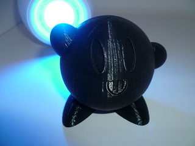
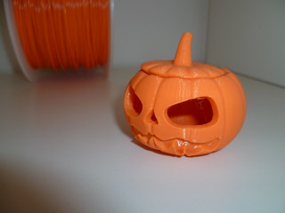
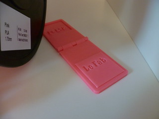
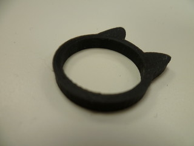

1 décembre 2013
Ouverture du Fab à Saint-Nazaire
Samedi 30 Novembre j'ai assisté à l'ouverture du Show-room du futur Fab-Lab de Saint-Nazaire !
Le Fab c'est quoi ? C'est tout d'abord un projet de Fab-Lab (comprenez Fabrication Laboratory) complet pour la création d'objets avec la mise à disposition de plein d'outils dont des imprimantes 3D. Celui-ci sera situé 1 boulevard Paul Leferme, près de l'ancienne base sous-marine à Saint-Nazaire et ouvrira très bientôt.Pour faire parler de ce projet et assurer la partie commerciale, un show-room a été ouvert ce samedi, 30 avenue de la Paix et des Arts en centre-ville. Le show-room est la partie visible de l'iceberg, on peut ici découvrir les imprimantes 3D, acheter des objets fabriqués par les responsables du Fab-Lab, mais aussi imprimer ses propres objets !


Pour le moment deux imprimantes sont disponibles, mais de nouvelles vont très bientôt arriver. Une des machines en démonstration, la MakerBot Replicator 2 permet notamment d'imprimer des objets de dimensions de 28.5 cm de longueur x 15.3 cm de largeur x 15.5 cm de hauteur. Cette machine fonctionne donc en déposant du plastique en filament avec le matériau PLA un bio-plastique. Les modèles créés sont au format STL et peuvent être transférés via une carte SD ou par USB.
Quelques objets sont déjà affichés en vitrine et en magasin, coques de smartphone, bijoux, figurines/statuettes pour donner des idées au futur créateurs.
Le show-room est en libre accès, il est tenu par Aurélie et Julien qui vous feront découvrir le monde de la création numérique. Les tarifs sont disponibles sur place et il est à noter que le lundi il est possible d'imprimer gratuitement hors coût de la matière (0,10 €/gramme).
Le Fab espère fonctionner avec de nombreux partenariat comme Aérolia en donnant un accès à leur machines pour réaliser des prototypes et en assurant une formation des différents outils.

Commentaires 5